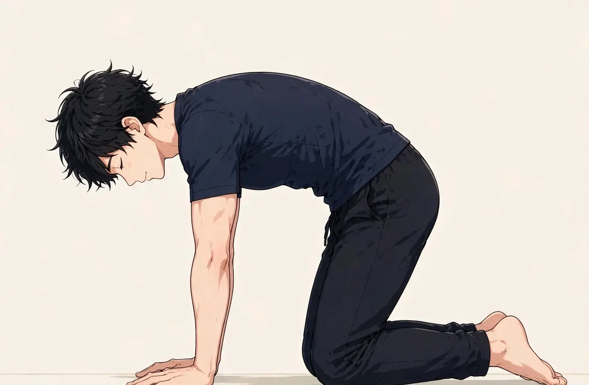

SYMPTOM GUIDE ｜ 東三国・新大阪
便秘・お腹の張りでお悩みの方へ東三国・新大阪の男性専用整体院 北辰堂

数日出ない日が続く、食後にお腹が張る、ガスがたまった感じがする——。便秘とお腹の張り感は、働く男性にも多い悩みです。生活リズムと腸の動きが深く関係します。
腸の動きは、腹圧・呼吸・姿勢・自律神経の影響を受けます。このページでは、便秘と張り感の要因の整理、関係するツボ、セルフケア、受診の目安をまとめました。一般的な健康情報としてお読みください。
① 便秘・お腹の張りとは
便秘は、排便の回数や量が減り、便が硬く出にくくなる状態です。腸（大腸）は、内容物を揉み送りながら水分を吸収しますが、その動き（蠕動運動）は自律神経に左右されます。緊張が続く生活や、水分・食物繊維の不足、運動不足が重なると、動きが鈍り、便秘と張り感につながります。
腹圧と呼吸も関係します。排便には、横隔膜と腹筋が作る腹圧が必要です。猫背でお腹を圧迫する姿勢や、腹部の緊張が強い状態では、腸の動きと腹圧の働きが妨げられます。トイレを我慢する習慣も、直腸の感覚を鈍らせる要因です。
一方で、便秘は大腸の病気や、薬の影響、甲状腺の状態などのサインの場合もあります。血便、体重減少、強い腹痛や嘔吐を伴う場合は、早めの確認が必要です。
腸はお腹全体に広がり、呼吸と腹圧の働きを受けます。下腹部の緊張は、腸の動きと排便のしやすさに関係します。位置は目安です。
② 要因の整理
便秘と張り感の背景は、腸の動きを鈍らせる生活の要素が重なっています。
- 水分と食物繊維の不足：水分が少ない便は硬くなり、食物繊維の不足は便のかさと腸への刺激を減らします。忙しい日の食事で不足しがちな要素です。
- 運動不足：歩行や体の動きは腸の動きを助けます。デスクワーク中心の生活では、腸への刺激が減ります。
- 自律神経の切り替えの乱れ：腸の蠕動は副交感神経が担います。緊張が続く生活では、腸の動きが鈍りやすくなります。
- トイレを我慢する習慣：便意を繰り返し我慢すると、直腸の感覚が鈍り、便秘が固定化します。朝の時間のなさも関係します。
- 姿勢と腹部の緊張：猫背でお腹を圧迫する姿勢や、腹部の緊張は、腸の動きと排便時の腹圧の働きを妨げます。
- 薬の影響：一部の薬（痛み止め、鉄剤、便秘を起こしやすい薬など）が便秘の要因になる場合があります。服用中の薬は医師・薬剤師に相談してください。
③ セルフチェックリスト
排便とお腹の状態、生活の土台を振り返るためのチェックです。
- 排便が週に2回以下のことが多い
- 便が硬く、出すときに力む
- 食後にお腹が張る感じがする
- ガスがたまった感じが続く
- 水分をあまり取らない
- 野菜や食物繊維の多い食事が少ない
- 運動する機会がほとんどない
- 便意を我慢することが多い
チェックは診断のためのものではありません。血便、強い腹痛や嘔吐、体重減少などがある場合は、セルフケアより先に⑧の受診の目安を確認してください。
④ 東洋医学から見た考え方とツボ
東洋医学では、便秘と張り感は「腸の気の巡りの滞り」と捉え、消化と排泄を担う経絡から整える考え方があります。お腹を任脈が、下半身を足陽明胃経が巡り、背中側には大腸兪があります。
天枢・中脘・足三里は、腸の動きと消化に関係する代表的なツボです。北辰堂では鍼灸施術は行いませんが、ツボの考え方は、体の緊張の状態を確認する施術の組み立てと、セルフケアの案内に活かしています。

中脘はみぞおちとおへその中間、天枢はおへその左右両脇、足三里はすねの外側上方にあります。位置は目安です。
ツボ：天枢（てんすう）
位置：おへその左右両脇（指2本分ほど外側）にあります。腸の動きと結びつけて考えられる代表的なツボです。
押し方：両手の指で左右同時に、ゆっくり圧を加えます。お腹の張りを感じる日のケアに使います。強く押さず、心地よい範囲で。
ツボ：中脘（ちゅうかん）
位置：みぞおちとおへその中間にあります。消化の働きと結びつけて考えられるツボです。
押し方：手のひらで温めながら、ゆっくり圧を加えます。食後すぐは避け、食間に行います。
ツボ：足三里（あしさんり）
位置：膝のお皿の下から指4本分ほど下、すねの骨の外側にあります。胃腸の働きと結びつけて考えられてきたツボです。
押し方：親指でゆっくり圧を加えます。食事の乱れが続く時期のケアに使います。
⑤ 整体・リラクゼーションでの施術の考え方
北辰堂の施術では、まず、排便の様子と、医療機関での確認を優先すべき様子（血便、強い腹痛、体重減少など）がないかを確認します。そのうえで、お腹・腰まわりの緊張と呼吸の深さを確認し、腸の動きを妨げにくい体の状態へ整える方向で施術を組み立てます。
便秘の方は、お腹や腰の緊張が強く、呼吸が浅い状態にあることが多くあります。施術で緊張をほどくことは、腸の動きへの切り替えの補助になります。あわせて、水分・食事・運動・トイレの習慣など、日常側の整え方を案内します。
腸の病気の診断と治療は医療機関の領域です。血便や強い痛みを伴う場合や、急に便秘になった場合は、施術より先に受診を案内します。当院の役割は、体の緊張と生活リズムの問題に対するケアの補助です。
排便の状態を把握するには、回数と便の硬さ、張りの出方を簡単に記録することが助けになります。水分や食事、歩行量との関係が見えてくると、自分の腸が動きやすい条件が分かってきます。市販薬を使った場合は、種類と効果も記録しておくと、薬剤師や医師への相談時に役立ちます。変化が急な場合は、記録より先に受診を優先してください。
⑥ セルフケア
セルフケアの狙いは、腸の動きを助ける日常の条件をそろえることです。

①四つ這いになる ②息を吐きながら背中を丸める ③息を吸いながら軽く反らす、を5回繰り返します。お腹まわりを動かす動きです。
セルフケア1：朝の水分と食事
起床後にコップ1杯の水を取り、朝食を取ることで、腸の動き出すきっかけ（胃結腸反射）を助けます。朝の時間に余裕を作ることも大切です。
セルフケア2：背骨を丸める・反らす動き
四つ這いで背中を丸める・反らす動きを5回繰り返します。お腹まわりを動かし、腸への刺激と腹部の緊張の緩和を助けます。
セルフケア3：歩行
食後の軽い歩行は、腸の動きを助けると考えられています。1日を通して歩く量を増やすことも、腸の土台になります。
セルフケア4：お腹を温める
湯船に浸かってお腹まわりを温めます。冷えは腸の動きを鈍らせるため、保温もケアの一つです。
⑦ 場面別の注意
- 朝の時間：便意が出やすいのは朝食後です。我慢せずトイレに行ける時間の余裕を作ります。
- 食事の場面：水分と食物繊維を意識し、よく噛んでゆっくり食べます。極端な食事制限は便のかさを減らすため避けます。
- 仕事の合間：座りっぱなしは腸の動きを鈍らせます。1時間に一度は立ち上がって歩きます。
- 就寝前：湯船で温まり、呼吸で切り替えを作ります。眠りの質は翌日の腸の動きにも関係します。
⑧ 受診の目安
- 便に血が混じる、便が黒い
- 強い腹痛や嘔吐を伴う、お腹が張ってガスも便も出ない
- 体重が減ってきた
- 急に便秘になった、便が細くなった
- 便秘と下痢を繰り返す
- 便秘が数週間続き、市販薬でも改善しない
便秘の背景には、大腸の病気、薬の影響、甲状腺の状態などが隠れる場合があります。血便や強い痛みを伴う場合は特に、医療機関（内科・消化器内科）で評価を受けてください。自己判断で下剤を増やし続けることも避けてください。
⑨ よくある質問
Q. 運動で便秘は変わりますか？
歩行などの運動は、腸の動きを助けると考えられています。食後の軽い歩行と、日常の歩く量を増やすことが、現実的な入口です。強い痛みがある日は無理をしないでください。
Q. マッサージを受ければ便秘は良くなりますか？
施術でお腹や腰の緊張をほどくことは、腸の動きへの切り替えの補助になります。ただし、便秘は水分・食事・運動・習慣の重なりで起こるため、施術だけで完結するものではありません。日常側の整え方もあわせて案内します。
Q. 下剤を使い続けてもよいですか？
下剤の種類によっては、使い方が大切なものがあります。自己判断で量を増やし続けるのではなく、薬剤師や医師に相談してください。血便や強い痛みがある場合は、先に医療機関を受診してください。
Q. 水分はどのくらい取ればよいですか？
一度に大量ではなく、こまめに取ることが基本です。心臓や腎臓の状態で水分の制限がある方は、医療機関の指示に従ってください。具体的な量は体格や活動量で変わります。
北辰堂のご案内
北辰堂は、大阪市淀川区東三国二丁目にある整体院です。男性スタッフ1人で運営しているため、男性専用としています。施術歴30年の平賀伸人（鍼灸師・国家資格）が、整体とリラクゼーションを行います。当院では鍼灸施術は行いません。営業は平日・土曜17:00〜22:00、日曜10:00〜22:00の完全予約制です。料金は60分 初回2,000円／2回目以降6,000円、90分 初回3,000円／2回目以降9,000円で、お支払いは現金のみです。プライバシーへの配慮のため、詳しい住所はご予約確定後にLINEでご案内します。
メニュー・料金は料金・メニューページ、施術者については当院についてをご覧ください。
関連するお悩み
ご予約・ご相談はLINEから
東三国・新大阪・淀川区周辺で、便秘・お腹の張りの相談先をお探しの方は、LINE公式アカウント（北辰堂）からお気軽にご連絡ください。排便の様子をお聞きしたうえで、施術の進め方をご案内します。
LINEで予約する